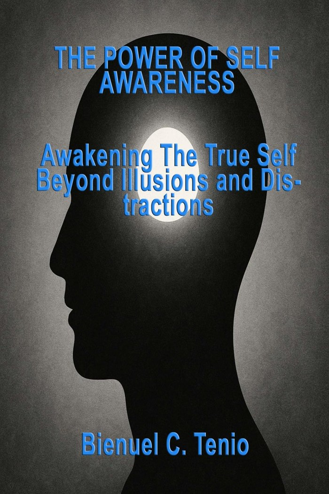

BOOK 02 OF 09 · AWARENESS & CLARITY
The Power Of Self Awareness
An invitation to understand the thoughts, emotions, and patterns that shape your life. Explore blind spots, personal values, and the everyday practices that make more conscious choices possible.
A GLIMPSE INSIDE
The Power Of Self Awareness — Book Trailer
A short introduction to reflection, clarity, and self-awareness.
A CLOSER LOOK
About this book
This book approaches self-awareness as an ongoing practice of honest observation. It considers reflection and feedback, emotional awareness, and identity before exploring how a clearer understanding of yourself can inform relationships, decisions, work, and spiritual life.
An invitation to understand the thoughts, emotions, and patterns that shape your life. Explore blind spots, personal values, and the everyday practices that make more conscious choices possible.
A QUESTION TO CARRY WITH YOU
Which recurring reaction in your life would you like to understand more clearly?
A reflection prompt inspired by the book’s themes.